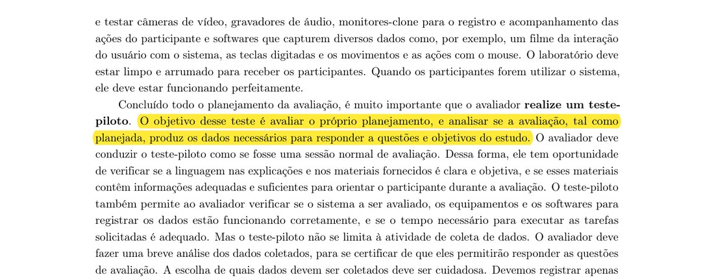

Planejamento e protocolo do teste-piloto
1. Conceito e finalidade
Esta página define o teste-piloto que o Grupo 02 fará antes de coletar dados sobre o storyboard do Gerenciador de Faltas e sobre a HTA e a CTT dessa funcionalidade. Ela atende ao item 11 da lista de verificação do Plano de Ensino (definição do teste-piloto e data de realização antes da avaliação, com referência bibliográfica e foto do trecho) e ao item 12 (o resultado do piloto não aparece no resultado da avaliação), tratado na seção 9. O piloto vem depois do planejamento DECIDE (métodos, perguntas e questões éticas) e antes das sessões descritas em Cronograma e logística das sessões de avaliação.
Barbosa et al. (2021) definem a finalidade do piloto como avaliar o planejamento, e não o artefato:
“O objetivo desse teste é avaliar o próprio planejamento, e analisar se a avaliação, tal como planejada, produz os dados necessários para responder a questões e objetivos do estudo.”
BARBOSA et al. (2021), cap. 11, seção 11.7.2 (Preparação), p. 276.

O motivo de fazer o piloto como se fosse uma sessão real está na mesma página:
“O avaliador deve conduzir o teste-piloto como se fosse uma sessão normal de avaliação.”
BARBOSA et al. (2021), cap. 11, seção 11.7.2, p. 276.
A edição de 2010 do mesmo livro traz o conceito na parte de coleta de dados e repete a recomendação no capítulo de planejamento da avaliação:
“Um estudo-piloto é uma pequena prévia do estudo principal, com o objetivo de assegurar que o estudo é viável e permitirá coletar os dados desejados e realizar as análises planejadas.”
BARBOSA; SILVA (2010), cap. 5, seção 5.1, p. 133. A mesma ideia aparece em BARBOSA; SILVA (2010), cap. 9, seção 9.7.2, p. 307: “Concluído todo o planejamento da avaliação, é muito importante que o avaliador realize um teste-piloto.”
Nota sobre a fonte: o capítulo de coleta de dados é o capítulo 5 na edição de 2010 e o capítulo 7 na edição de 2021. As citações acima foram conferidas nas páginas indicadas dos PDFs.
2. Objetivos específicos do piloto
Os objetivos abaixo são proposta do grupo, a validar. Cada um traz o motivo no livro, com página.
- OP1. Conferir a clareza da linguagem e dos materiais. Motivo: o piloto permite verificar “se a linguagem nas explicações e nos materiais fornecidos é clara e objetiva, e se esses materiais contêm informações adequadas e suficientes para orientar o participante durante a avaliação” (BARBOSA et al., 2021, cap. 11, seção 11.7.2, p. 276). Materiais: TCLE, explicação inicial, storyboard e perguntas.
- OP2. Medir o tempo. A sessão prevista é de 15 a 20 minutos. O livro manda verificar “e se o tempo necessário para executar as tarefas solicitadas é adequado.” (p. 276). O piloto cronometra cada bloco do roteiro.
- OP3. Testar gravação, anotação e plataforma. O piloto verifica se os equipamentos e o registro de dados funcionam (BARBOSA et al., 2021, p. 276). Aqui: gravação de áudio, formulário do anotador e, na versão remota, a videoconferência.
- OP4. Verificar a neutralidade das perguntas. O roteiro não pode induzir respostas (BARBOSA et al., 2021, cap. 7, seção 7.5.1, p. 146). O piloto confere se alguma pergunta foi entendida como pedido de elogio ou de confirmação.
- OP5. Confirmar que os dados respondem às perguntas. “O avaliador deve fazer uma breve análise dos dados coletados, para se certificar de que eles permitirão responder as questões de avaliação.” (BARBOSA et al., 2021, cap. 11, p. 276). Cada uma das cinco perguntas do storyboard deve render ao menos uma resposta interpretável.
- OP6. Corrigir antes de coletar. “Se algum problema for detectado no teste-piloto, o planejamento da avaliação e o material de apoio devem ser corrigidos.” (BARBOSA et al., 2021, cap. 11, p. 276). A ficha de calibração (Tabela 25) registra o que foi corrigido.
O piloto coleta apenas o que serve a esses objetivos. O livro avisa que “Devemos registrar apenas dados que possam contribuir com os objetivos da avaliação.” (BARBOSA et al., 2021, cap. 11, p. 276). Por isso o piloto não pede dados acadêmicos pessoais e a gravação é só de áudio, com autorização.
3. Materiais
Os materiais são os mesmos das sessões reais, pois o piloto testa esses materiais. O documento do grupo lista storyboard impresso ou em tela, roteiro da entrevista, formulário de consentimento e gravação de áudio. Para o piloto, o grupo acrescenta (proposta do grupo, a validar) o formulário do anotador e a ficha de calibração.
- Storyboard de seis quadros do Gerenciador de Faltas, impresso em folha única e em arquivo para tela.
- Roteiro da entrevista semiestruturada com as perguntas-modelo da Tabela 24.
- Termo de Consentimento Livre e Esclarecido (TCLE) em duas vias, com autorização de gravação em campo separado. O modelo do grupo (TCLE_NoFluxoUnB, de 25/09/2026) prevê duração de 30 minutos a 2 horas; para as sessões de 15 a 20 minutos, o texto deve ser ajustado, e o piloto testa o texto ajustado (proposta do grupo, a validar).
- Formulário do anotador: uma linha por quadro e por pergunta, com campos para falas literais, dúvidas espontâneas e tempo gasto.
- Gravador de áudio principal e um aparelho de reserva.
- Cronômetro visível para o anotador.
- Ficha de calibração (Tabela 25), preenchida ao fim do piloto.
- Para o conferimento sem participante: HTA e CTT em A4 e em tela, lista de verificação e planilha de registro de discrepâncias.
4. Papéis, agendamento e plataforma
A Tabela 22 reúne os papéis, a data proposta e a plataforma. O documento do grupo prevê “teste-piloto de uma sessão” entre 14 e 16/10, feito pelo integrante responsável por cada conjunto de artefatos, e um outro integrante como anotador. O piloto desta página usa o conjunto do Gerenciador de Faltas. Os nomes dos papéis seguem a regra de revezamento proposta pelo grupo (cada integrante conduz os próprios artefatos e anota para o anterior na ordem Felipe, Matheus, Tiago, Victor), que é proposta do grupo, a validar. A data, o horário e o local são proposta do grupo, a validar com todos os envolvidos.
| Item | Definição | Observação e base |
|---|---|---|
| Facilitador | Felipe Lopes Pedroza, autor do Gerenciador de Faltas | Conduz a sessão, apresenta o estudo, faz as perguntas e cuida do tempo. Segue o roteiro da Tabela 23. |
| Anotador | Victor Andreozzi de La Rocque Couto, pela regra de revezamento | Registra falas, dúvidas e tempos no formulário. Não interrompe o participante. O livro recomenda mais de um avaliador na coleta: “É recomendável que pelo menos dois avaliadores trabalhem na coleta de dados” (BARBOSA et al., 2021, cap. 11, seção 11.7.3, p. 277), citação que vale para a coleta em geral. |
| Responsável pela gravação | Integrante a definir. Proposta: o anotador inicia e encerra a gravação, e o aparelho de reserva fica ligado desde a abertura | A gravação só começa depois da autorização registrada no TCLE (BARBOSA et al., 2021, cap. 7, seção 7.4, p. 141). |
| Participante de teste | A recrutar | Não pode ter participado do planejamento nem da preparação (seção 7). Também não entra na amostra das sessões reais (BARBOSA; SILVA, 2010, cap. 5, p. 134). |
| Data proposta do piloto | 15/10/2026 (quinta-feira), das 14h00 às 14h45 (sessão de 17 minutos, conversa de avaliação de 5 minutos e primeira revisão) | Dentro da janela 14 a 16/10 do documento do grupo, antes das sessões que começam em 16/10. |
| Data de reserva | 16/10/2026 (sexta-feira), às 10h00 | Serve ao novo piloto, se a ficha de calibração reprovar itens essenciais. O livro admite repetir, pois outros testes-pilotos “podem ser executados, até que tudo esteja pronto” (BARBOSA et al., 2021, p. 276). |
| Local ou plataforma | Presencial no campus UnB Gama (sala a reservar) ou remoto por videoconferência (ferramenta a definir) | O documento prevê sessões presenciais ou remotas. O piloto usa a modalidade que mais se repetirá nas sessões e, se houver tempo, o formato remoto é conferido na data de reserva. |
| Duração | Sessão de 15 a 20 minutos, mais 5 minutos de conversa sobre o próprio piloto | Coerente com a regra do livro de não passar de 20 minutos por tarefa: “O tempo estimado para um participante realizar cada tarefa não deveria ultrapassar 20 minutos.” (BARBOSA et al., 2021, cap. 11, p. 275). |
Fonte: Documento da Entrega 4 do Grupo 02 (seções 1 e 5); BARBOSA et al. (2021), cap. 11 e cap. 7. Data, horário e papéis nominais são proposta do grupo.
O participante de teste tem regras próprias no livro. A primeira é sobre o perfil: “Idealmente, os participantes do estudo-piloto deveriam ser membros da população-alvo do estudo.” (BARBOSA et al., 2021, cap. 7, seção 7.1, p. 136). Aqui, a população-alvo é de alunos da UnB. A segunda é sobre a escolha de pessoas próximas, permitida no piloto:
“Para o teste-piloto, não há muito problema em convidar um colega de trabalho, um amigo, ou uma pessoa mais próxima do avaliador, pois os dados coletados serão descartados.”
BARBOSA et al. (2021), cap. 11, seção 11.7.2, p. 276. A frase seguinte do livro impõe a restrição: “esse participante não deve ter se envolvido no planejamento e na preparação da avaliação.”
O motivo da restrição está na edição de 2010:
“qualquer pessoa envolvida num estudo-piloto não deve estar envolvida no estudo principal, pois essas pessoas saberão mais sobre o estudo e poderão distorcer os resultados.”
BARBOSA; SILVA (2010), cap. 5, seção 5.1, p. 134.
5. Roteiro passo a passo
A Tabela 23 divide a sessão em blocos com tempo e ponto de verificação. A estrutura segue a que o livro descreve para entrevistas:
“uma apresentação, na qual o entrevistador se apresenta e explica o objetivo da entrevista; um período de aquecimento, no qual são feitas perguntas de fácil resposta, como dados demográficos; a parte principal da entrevista, na qual o roteiro é explorado; um período de desaquecimento, para desfazer alguma tensão que tenha surgido”
BARBOSA et al. (2021), cap. 7, seção 7.5.1 (Entrevistas), p. 145. A conclusão, com agradecimento e fim da gravação, vem na p. 146.
| Minuto | Etapa | Quem faz e como | Ponto de verificação |
|---|---|---|---|
| −10 a 0 | Preparação | Facilitador e anotador abrem o storyboard, testam 30 segundos de gravação nos dois aparelhos, separam o TCLE em duas vias e zeram o cronômetro. | A gravação de teste é audível. Os materiais estão na mesa ou na tela. |
| 0 a 1 | Acolhida e quebra-gelo | Facilitador recebe o participante, diz que é um piloto e que o que se avalia é o planejamento e o storyboard, não a pessoa. | O participante está à vontade. A frase de que o produto é avaliado, e não o participante, foi dita (BARBOSA et al., 2021, cap. 7, seção 7.4, p. 142). |
| 1 a 4 | Apresentação do estudo e TCLE | Facilitador explica objetivo, duração, uso dos dados e direito de desistir. Entrega o TCLE em duas vias e pergunta, em campo separado, se autoriza a gravação de áudio. | TCLE assinado. Autorização de gravação marcada antes de ligar o gravador. O participante repete com suas palavras que pode desistir. |
| 4 a 5 | Aquecimento | Facilitador pergunta apenas: curso e se se considera calouro ou veterano. A pergunta sobre já ter tido dificuldade com faltas é opcional. | Nenhum dado acadêmico pessoal foi pedido. A resposta opcional não gerou constrangimento. |
| 5 a 7 | Leitura do storyboard | Participante lê os seis quadros sem explicação do facilitador. Anotador registra dúvidas e o tempo de leitura. | O participante percorreu os seis quadros sem ajuda. Dúvidas espontâneas anotadas. |
| 7 a 15 | Perguntas-modelo PM1 a PM5 | Facilitador faz as cinco perguntas da Tabela 24, cerca de 1,5 minuto cada, e usa a sondagem só se a resposta for curta. Anotador registra a fala literal. | Cada pergunta foi entendida na primeira leitura. Nenhuma resposta foi influenciada pelo tom ou pelo gesto do facilitador. Tempo por pergunta anotado. |
| 15 a 17 | Desaquecimento e encerramento | Facilitador pergunta se há algo a acrescentar, agradece, avisa o que será feito com os dados e desliga o gravador. | Sessão encerrada em até 20 minutos. Gravador desligado e arquivo salvo. |
| 17 a 22 | Conversa sobre o piloto (fora do roteiro real) | Facilitador pergunta ao participante o que ficou confuso, longo ou constrangedor no TCLE, no storyboard e nas perguntas. | Lista de problemas do material, com a fala do participante. |
| Depois | Análise rápida e calibração | Facilitador e anotador, em até 30 minutos, olham as anotações, preenchem a Tabela 25 e decidem: aprovado, ajustar ou repetir na data de reserva. | Ficha preenchida. Decisão registrada. Correções feitas nos materiais. |
Fonte: Elaboração do grupo a partir de BARBOSA et al. (2021), cap. 7 (seções 7.4 e 7.5.1) e cap. 11 (seção 11.7.2). Tempos são proposta do grupo.
A soma dos blocos da sessão é de 17 minutos, dentro dos 15 a 20 previstos. A conversa sobre o piloto fica fora da conta porque só existe no piloto.
6. Perguntas-modelo
A Tabela 24 traz uma pergunta aberta e neutra para cada uma das cinco perguntas do storyboard do documento do grupo. Os identificadores finais das perguntas estão em Perguntas da avaliação; aqui os rótulos PM1 a PM5 são só deste piloto. O livro recomenda o roteiro semiestruturado:
“Em geral, buscamos um meio termo, e conduzimos entrevistas semiestruturadas.”
BARBOSA et al. (2021), cap. 7, seção 7.5.1, p. 145.
Quando a resposta é curta, a sondagem segue o que o livro orienta: “cabe ao entrevistador explorar um pouco mais a resposta fazendo perguntas adicionais” (BARBOSA et al., 2021, cap. 7, seção 7.5.1, p. 147).
| Nº | Pergunta-modelo | Sondagem, se a resposta for curta | Pergunta do documento a que serve | Cuidado do facilitador |
|---|---|---|---|---|
| PM1 | “Conte com suas palavras o que acontece em cada quadro.” | “O que o levou a pensar isso neste quadro?” | Pergunta 1: a sequência dos quadros é compreendida sem explicação adicional? | Não explicar nem corrigir a leitura do participante. |
| PM2 | “Como a situação dos quadros 1 e 2 se compara com o que acontece com você ou com colegas?” | “Com que frequência isso acontece, na sua experiência?” | Pergunta 2: o problema das faltas acumuladas é reconhecido como real e frequente? | Não perguntar “você também perde a conta das faltas?”, que sugere a resposta. |
| PM3 | “Como seria, para você, fazer o que o quadro 4 mostra?” | “O que você faria nos dias em que estivesse com pressa?” | Pergunta 3: registrar cada falta manualmente parece viável? | Não perguntar “dá trabalho registrar?”. Deixar o participante falar do esforço por conta própria. |
| PM4 | “O que você consegue saber olhando o painel do quadro 5?” | “O que ele diz sobre quanto você ainda pode faltar?” | Pergunta 4: o painel com faltas, limite e alerta responde à pergunta “quantas faltas ainda posso ter?” | Só usar a sondagem depois da resposta livre, para não introduzir o termo do documento. |
| PM5 | “De onde você acha que vem o número mostrado no painel? E o que o quadro 6 promete a você?” | “O que você esperaria que acontecesse se esquecesse de registrar uma falta?” | Pergunta 5: o participante entende que o total vem dos registros dele, e o quadro 6 não promete mais do que o sistema entrega? | Fazer as duas perguntas separadas, uma de cada vez, pois o livro pede para desdobrar perguntas compostas (cap. 7, seção 7.5.1, p. 147). |
| Fecho | “Há algo que você queira acrescentar ou que não perguntei?” | Não se aplica. | Todas | Aguardar a resposta em silêncio por alguns segundos. |
Fonte: Elaboração do grupo a partir das cinco perguntas do storyboard (documento da Entrega 4, seção 1) e de BARBOSA et al. (2021), cap. 7, seção 7.5.1, p. 145 a 147.
7. Conduta ética do avaliador
O facilitador e o anotador seguem, no piloto, as mesmas regras que seguirão nas sessões reais. As regras abaixo detalham o que está em Questões éticas.
- Neutralidade. Motivo e modo: o livro manda que o entrevistador evite influenciar as respostas, e diz como:
“O entrevistador deve evitar influenciar as respostas dos entrevistados com a formulação das perguntas, expressões faciais, gestos ou entonação de voz.”
BARBOSA et al. (2021), cap. 7, seção 7.5.1, p. 146.
- Não induzir respostas. Motivo: perguntas de sim ou não podem fazer o participante agradar o avaliador, e o livro dá o exemplo de que “o entrevistado pode querer agradar o entrevistador e responder rapidamente “sim”.” (BARBOSA et al., 2021, cap. 7, p. 146). Modo: as perguntas da Tabela 24 são abertas, e o facilitador não elogia nem comenta as respostas.
- O artefato é avaliado, não a pessoa. Motivo: “devemos enfatizar que é o produto que será avaliado, e não o participante.” (BARBOSA et al., 2021, cap. 7, seção 7.4, p. 142). Modo: o facilitador diz isso na acolhida e repete se o participante se mostrar inseguro.
- Gravação só com permissão. Motivo: “É necessário obter permissão para gravar a voz ou imagem de qualquer pessoa, antes de começar a gravação.” (BARBOSA et al., 2021, cap. 7, seção 7.4, p. 141). Modo: autorização em campo separado do TCLE; o gravador só liga depois dela.
- Direito de parar. O participante pode desistir a qualquer momento e o facilitador interrompe se notar desconforto (BARBOSA et al., 2021, cap. 7, p. 142).
- Relação com o avaliador. Se o participante do piloto for conhecido, o facilitador esclarece, como orienta o livro, que “o avaliador pode atenuar a interferência das relações entre eles esclarecendo que o objetivo da avaliação é encontrar problemas na interface e que a opinião dos participantes é importante para melhorá-la.” (BARBOSA et al., 2021, cap. 11, p. 276).
8. Ficha de calibração
A Tabela 25 é a ficha que o facilitador e o anotador preenchem logo após o piloto. Cada item tem critério de aprovação. As quantidades dos critérios são proposta do grupo, a validar. A coluna “Resultado” é campo de registro: fica vazia até o piloto e será preenchida com Aprovado, Ajustar ou Reprovado.
| ID | Item verificado | Critério de aprovação | Resultado (campo de registro) | Ação se não aprovado |
|---|---|---|---|---|
| C01 | Duração da sessão | Da acolhida ao encerramento, entre 15 e 20 minutos | A registrar | Reduzir sondagens ou reordenar blocos; repetir o piloto se passar de 20 minutos |
| C02 | Clareza da explicação inicial e do TCLE | O participante diz com as próprias palavras o que vai acontecer e que pode desistir, sem ajuda | A registrar | Reescrever o trecho em linguagem mais simples |
| C03 | Legibilidade do storyboard | O participante percorre os seis quadros e conta a sequência sem explicação do facilitador | A registrar | Ajustar texto ou ordem dos quadros; registrar como achado do artefato, sem usar nos resultados |
| C04 | Compreensão das perguntas | Ao menos quatro das cinco perguntas entendidas na primeira leitura, sem reformulação | A registrar | Reformular a pergunta e testar de novo |
| C05 | Neutralidade | Nenhuma pergunta induzida ou de sim ou não sem sondagem aberta, conferida pelo anotador na gravação | A registrar | Reescrever a pergunta e treinar a entonação |
| C06 | Dados respondem às perguntas | Cada uma das cinco perguntas gerou ao menos uma resposta interpretável na análise rápida | A registrar | Rever a pergunta ou a sondagem |
| C07 | Gravação de áudio | Arquivo gerado, voz do participante e do facilitador compreensíveis do início ao fim | A registrar | Trocar o aparelho, afastar o ruído, testar de novo antes das sessões |
| C08 | Autorização de gravação | Autorização registrada em campo separado antes de ligar o gravador | A registrar | Reordenar o roteiro para colher a autorização antes |
| C09 | Formulário do anotador | O anotador registrou falas, dúvidas e tempos sem pedir pausa e sem perder trechos | A registrar | Simplificar o formulário; incluir colunas que faltaram |
| C10 | Plataforma | Presencial: sala adequada. Remoto: conexão estável e quadros legíveis na tela compartilhada | A registrar | Trocar de sala ou de ferramenta; definir o plano B da Tabela 26 |
| C11 | Armazenamento | Arquivos salvos com o código PILOTO em pasta privada, fora do repositório público | A registrar | Mover os arquivos antes de qualquer outra atividade |
| C12 | Material da sessão de HTA e CTT (sem participante) | HTA, CTT, lista de verificação e planilha de discrepâncias abrem, são legíveis e têm os campos necessários | A registrar | Corrigir o material antes da primeira sessão de HTA e CTT |
Fonte: Elaboração do grupo a partir de BARBOSA et al. (2021), cap. 11, seção 11.7.2, p. 276. Critérios numéricos são proposta do grupo.
A Tabela 25 transforma em itens verificáveis o que o livro pede que o piloto verifique: linguagem e materiais (C02, C03), equipamentos (C07, C10), tempo (C01) e adequação dos dados às perguntas (C06). O item C12 existe porque o documento prevê um único piloto, feito com o roteiro do storyboard, que tem mais sessões. Os materiais da sessão de HTA e CTT são conferidos sem participante (proposta do grupo, a validar).
9. Declaração de conformidade com o item 12
O item 12 da lista de verificação do Plano de Ensino pergunta se o resultado do teste-piloto não será apresentado no resultado da avaliação. O grupo declara que sim, e o motivo está no livro:
“Os dados do teste-piloto devem ser descartados, pois podem estar contaminados por problemas que ocorreram durante o piloto”
BARBOSA et al. (2021), cap. 11, seção 11.7.2, p. 276.
Esta declaração vale para o relato dos resultados do storyboard e da análise de tarefas. Em termos práticos:
- As anotações, a gravação e a ficha do piloto não entram nas tabelas de resultados por pergunta, no sumário dos dados, nem na contagem de participantes.
- A gravação do piloto é apagada ao fim da disciplina, como as demais, e fica identificada pelo código PILOTO. As anotações servem somente para corrigir o planejamento.
- O participante do piloto não participa das sessões reais (BARBOSA; SILVA, 2010, cap. 5, p. 134).
- O que o piloto revelar sobre o storyboard, a HTA ou a CTT vira correção do material antes das sessões. Se o grupo fizer essa correção, ela não será contada como achado da avaliação.
- Se houver mais de um piloto (data de reserva), a regra vale para todos.
- O relato final pode dizer apenas que um piloto ocorreu, em que data e quais ajustes foram feitos no planejamento, sem citar respostas do participante.
10. Matriz de riscos e contingência
A Tabela 26 lista os riscos do piloto, com probabilidade e impacto estimados pelo grupo (proposta do grupo, a validar) e a contingência de cada um.
| ID | Risco | Probabilidade | Impacto | Contingência |
|---|---|---|---|---|
| R1 | O participante de teste não comparece ou cancela | Média | Alto | Convidar uma segunda pessoa de reserva. Usar a data de reserva (16/10, 10h00). Se não houver ninguém, recorrer a colega ou amigo, como o livro permite no piloto, desde que não tenha participado do planejamento. |
| R2 | A conexão cai na versão remota | Média | Médio | Retomar a chamada e continuar do ponto em que parou. Se não voltar em 3 minutos, continuar por áudio com o storyboard enviado em arquivo, ou remarcar na data de reserva. |
| R3 | A gravação falha | Média | Médio | O aparelho de reserva grava desde o início. O anotador mantém o registro escrito. Registrar a falha em C07 e corrigir antes das sessões. |
| R4 | A sessão passa de 20 minutos | Alta | Médio | Anotar o tempo por bloco, cortar sondagens e reordenar. Repetir o piloto se o excesso persistir após o ajuste. |
| R5 | TCLE ou perguntas confusos para o participante | Média | Alto | Reescrever o trecho. Se as mudanças forem muitas, repetir o piloto, como o livro admite (p. 276). |
| R6 | O participante do piloto é conhecido e evita criticar | Média | Médio | Esclarecer, na acolhida, que o objetivo é achar problemas e que a opinião dele ajuda a melhorar o artefato (BARBOSA et al., 2021, cap. 11, p. 276). |
| R7 | O piloto fica pronto tarde e as sessões começam em 16/10 | Média | Alto | Fazer as correções na manhã de 16/10. Só realizar a primeira sessão real com a ficha aprovada. Se necessário, deslocar a primeira sessão para dentro da janela até 21/10. |
| R8 | Dados do piloto se misturam aos dos resultados | Baixa | Alto | Pasta e arquivos com o código PILOTO. Nenhuma linha do piloto nas tabelas de resultados (seção 9). |
| R9 | Arquivos com voz ou termos ficam em local público | Baixa | Alto | Guardar em pasta privada fora do repositório público e apagar ao fim da disciplina, como o TCLE do grupo prevê. |
Fonte: Elaboração do grupo a partir de BARBOSA et al. (2021), cap. 11, seção 11.7.2, p. 276, e do documento da Entrega 4 do Grupo 02.
Referências
- BARBOSA, S. D. J.; SILVA, B. S. da; SILVEIRA, M. S.; GASPARINI, I.; DARIN, T.; BARBOSA, G. D. J. Interação Humano-Computador e Experiência do Usuário. 1. ed. Rio de Janeiro, 2021. Cap. 11, Planejamento da Avaliação de IHC, seção 11.7.2 (Preparação), p. 274 a 276 (citações das p. 275 e 276 e foto da p. 276); seção 11.7.3, p. 277. Cap. 7, seção 7.1, p. 136; seção 7.4, p. 141 e 142; seção 7.5.1, p. 145 a 147.
- BARBOSA, S. D. J.; SILVA, B. S. da. Interação Humano-Computador. Rio de Janeiro: Elsevier, 2010. Cap. 5, seção 5.1, p. 133 e 134; cap. 9, seção 9.7.2, p. 307.
- SALES, A. B. de. Plano de Ensino: Interação Humano-Computador (02/2026, Turma 01). Brasília: Universidade de Brasília, Faculdade UnB Gama, 2026. Lista de verificação do planejamento da avaliação, itens 8, 11 e 12, p. 13 do PDF.
- PREECE, J.; ROGERS, Y.; SHARP, H. Interaction Design: Beyond Human-Computer Interaction. Wiley, 2002 (framework DECIDE), conforme citado em BARBOSA et al. (2021), cap. 11, seção 11.8, p. 279 e 280.
Histórico de versão
| Versão | Data | Descrição | Autor(es) | Revisor(es) |
|---|---|---|---|---|
| 1.0 | 12/10/2026 | Publicação da Entrega 4 (planejamento da avaliação do storyboard e da análise de tarefas) a partir do documento do grupo, dividida em artefatos, com nomes e matrículas de Felipe, Matheus e Victor (issue #59) | Felipe Lopes Pedroza, Matheus do Vale Lameira e Victor Andreozzi de La Rocque Couto | A definir (validação pendente) |
| 1.1 | 13/10/2026 | Inclusão da lista de verificação do Storyboard (15 itens, com respostas, textos de origem, fontes e fotos dos trechos), em artefatos por atividade do DECIDE (issue #61) | Matheus do Vale Lameira | A definir (validação pendente) |
| 1.2 | 13/10/2026 | Autoria da lista de verificação do Storyboard (Matheus e Felipe) e inclusão dos vídeos da lista de verificação e da apresentação da Entrega 4 (issue #62) | Matheus do Vale Lameira e Felipe Lopes Pedroza | A definir (validação pendente) |
| 1.3 | 13/10/2026 | Publicação da parte individual de Felipe (Gerenciador de Faltas) com o cronograma até 03/11/2026, dividida em artefatos (issue #63) | Felipe Lopes Pedroza (conteúdo); Matheus do Vale Lameira (publicação) | A definir (validação pendente) |
| 1.4 | 13/10/2026 | Correção da atribuição da parte individual (Gerenciador de Faltas, com cronograma): a entrega do documento é de Victor, Matheus e Felipe, com os três nomes e matrículas no cabeçalho (issue #64) | Victor Andreozzi de La Rocque Couto, Matheus do Vale Lameira e Felipe Lopes Pedroza | A definir (validação pendente) |
| 1.5 | 13/10/2026 | Retirado o rótulo de parte individual do documento do Gerenciador de Faltas (cabeçalho e parágrafo de abertura): o documento é do grupo, feito por Victor, Matheus e Felipe (issue #65) | Victor Andreozzi de La Rocque Couto, Matheus do Vale Lameira e Felipe Lopes Pedroza | A definir (validação pendente) |
| 1.6 | 13/10/2026 | Removido o documento do Gerenciador de Faltas (visão geral, seções 1 a 5 e referências) da Entrega 4 (issue #66) | Victor Andreozzi de La Rocque Couto, Matheus do Vale Lameira e Felipe Lopes Pedroza | A definir (validação pendente) |
| 1.7 | 13/10/2026 | Documento da Entrega 4 substituído pela versão com o cronograma até 03/11/2026 (seções 1 a 5), de Victor, Matheus e Felipe, sem o rótulo de parte individual; itens da lista que citam a Seção 5 ligados ao cronograma (issue #67) | Victor Andreozzi de La Rocque Couto, Matheus do Vale Lameira e Felipe Lopes Pedroza | A definir (validação pendente) |
| 1.8 | 15/10/2026 | Ampliação da Entrega 4 nos moldes do Plano de Ensino: métodos, modos e motivos; perguntas e critérios; questões práticas e éticas; teste-piloto; logística das sessões; estrutura do relato; cronograma planejado e executado; concordância com o livro; tabela de contribuição e agradecimentos (issues #68 a #72) | Victor Andreozzi de La Rocque Couto, Matheus do Vale Lameira e Felipe Lopes Pedroza | A definir (validação pendente) |
| 1.9 | 18/10/2026 | Menu lateral reorganizado em grupos (visão geral, documento do grupo, planejamento ampliado, lista de verificação e planejamentos individuais) e inclusão do planejamento do relato dos resultados do Matheus (issue #75) | Matheus do Vale Lameira | A definir (validação pendente) |
| 1.11 | 18/10/2026 | Removido o planejamento individual da avaliação do Matheus, que fica somente com o planejamento do relato dos resultados; menu, navegação e tabela de contribuição ajustados e fonte das citações corrigida (issues #79 e #80) | Matheus do Vale Lameira | A definir (validação pendente) |
| 1.15 | 18/10/2026 | Planejamentos individuais organizados por integrante no menu e na visão geral; o nome do integrante abre os artefatos dele e sai do título (issue #85) | Matheus do Vale Lameira | A definir (validação pendente) |
| 1.16 | 18/10/2026 | Planejamento do relato do Matheus dividido em cinco artefatos no menu e na visão geral, sob o nome do integrante (issue #86) | Matheus do Vale Lameira | A definir (validação pendente) |
| 1.17 | 18/10/2026 | Travessões removidos do texto e parênteses retirados dos títulos (issues #87 e #88) | Matheus do Vale Lameira | A definir (validação pendente) |